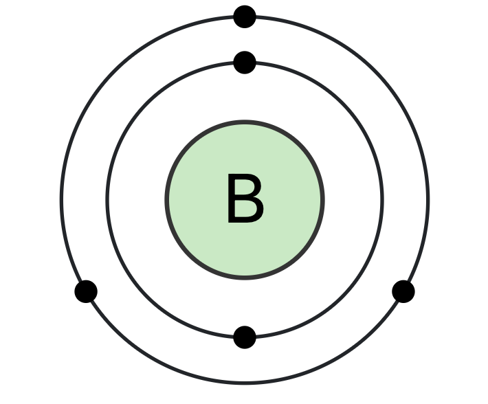

Atomic Number 5 | A Metalloid with Versatile Chemistry

Overview
Boron is a chemical element with the symbol B and atomic number 5.
Classified as a metalloid, boron is found in meteoroids and cosmic dust
and makes up only 0.001% by weight of Earth's crust.
In nature, boron occurs in compounds such as borax and boric acid.
It is essential in small quantities to some plants and has diverse
industrial applications, including fiberglass, boron nitride ceramics, and more.
Properties & Uses
Atomic Number: 5
Atomic Mass: 10.81 u
Electron Configuration: [He] 2s2 2p1
Group / Block: 13 (p-block)
Standard State: Solid at 25 °C
Melting Point: 2076 °C
Boiling Point: 3927 °C
Radioactive: No (stable isotopes exist)
Boron’s unique bonding properties allow it to form complex structures known as
boron clusters. Its compounds have a wide range of uses, such as in aerospace
materials, nuclear reactors (as a neutron absorber), semiconductors, and fertilizers.
Boron in Action
Above, the
Periodic Table of Videos
team explores Boron's properties, its interesting allotropes, and
how it's used in everything from fireworks to bulletproof vests.
Historical Perspective
Boron compounds, such as borax, have been known since ancient times,
with usage in ceramics, glassmaking, and as a cleaning agent.
However, the element itself was not isolated until 1808 by Sir Humphry Davy,
Joseph-Louis Gay-Lussac, and Louis Jacques Thénard.
Because of difficulties in obtaining boron in pure form,
early samples were often heavily contaminated.
In modern times, high-purity boron can be prepared for advanced electronics
and specialized structural materials.